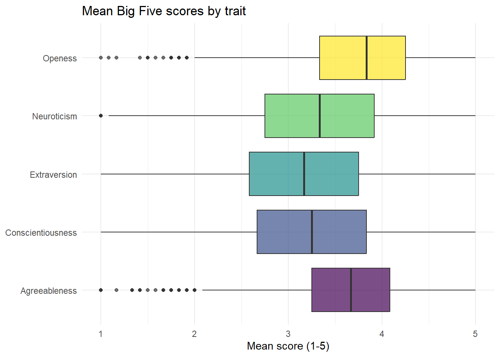
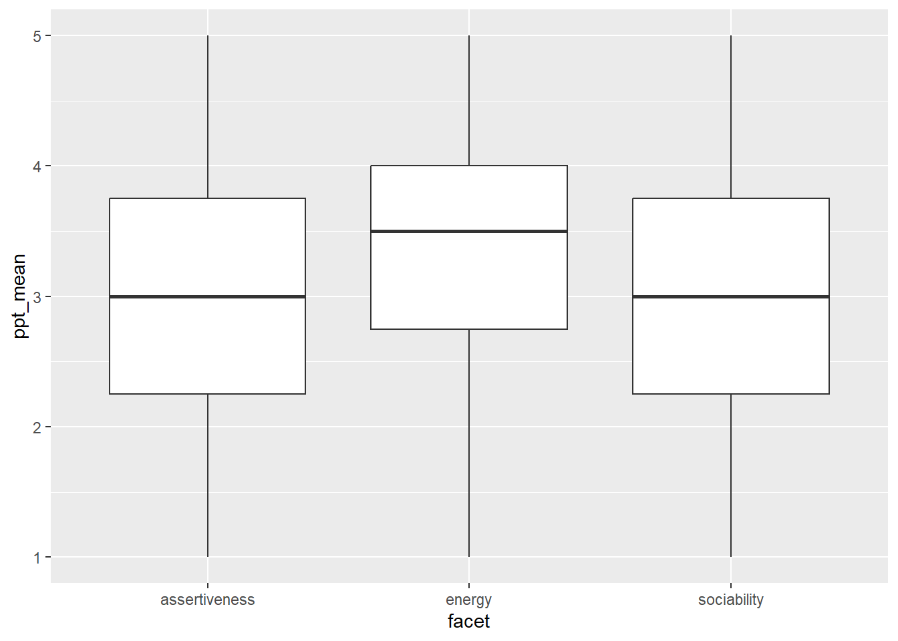

10 Big five personality 2
10.1 Intended Learning Outcomes
By the end of this chapter you should be able to:
- Be able to reshape data from wide-form to long-form using
pivot_longer() - Be able to summarise data for different groupings using
group_by()andsummarise()
10.2 Walkthrough video
There is a walkthrough video of this chapter available via OneDrive. We recommend first trying to work through each section of the book on your own and then watching the video if you get stuck, or if you would like more information. This will feel slower than just starting with the video, but you will learn more in the long-run. Please note that there may have been minor edits to the book since the video was recorded. Where there are differences, the book should always take precedence.
10.3 Activity 1: Set-up
- Open your Big Five project. If you can’t remember how to open a project, refer back to section @ref(sec-open-project)
- Create a new Markdown document named “Big Five 2”. Delete the default text and then create a new code chunk.
- Your environment should be clear but if there are objects in it, remove them by pressing the brush icon.
10.4 Activity 2: Loading the data
In code chunk 1, write and run the code that:
- Loads the
tidyversepackage. - Uses
read_csv()to loadbig5_data.csvinto an object namedbig5. - Loads
scoring.csvinto an object namedscoring. - Loads
code_book.csvinto a object namedcodebook.
10.5 Activity 3: Wide-form and long-form data
As noted in the last chapter, our Big Five data is currently in wide-form, with one row for each participant that contains all the data for that one person. The below table shows a preview of the first 10 columns for the first five participants.
| ResponseId | Q4_1 | Q4_2 | Q4_3 | Q4_4 | Q4_5 | Q4_6 | Q4_7 | Q4_8 | Q4_9 |
|---|---|---|---|---|---|---|---|---|---|
| R_3O9fzdsGn9tEeOm | 5 | 4 | 1 | 1 | 5 | 3 | 5 | 1 | 2 |
| R_12z0hyaE0u5KaRG | 4 | 4 | 5 | 1 | 5 | 3 | 5 | 5 | 1 |
| R_2VmvNkJQ6RpY3PV | 3 | 5 | 4 | 2 | 2 | 4 | 4 | 4 | 2 |
| R_eboWF1vMzPIVPi1 | 4 | 2 | 5 | 1 | 2 | 5 | 2 | 5 | 2 |
| R_1jBz09Q5pO9alkq | 4 | 5 | 1 | 2 | 1 | 3 | 4 | 4 | 1 |
| R_pui4ZWuxPsJ7vUt | 2 | 5 | 5 | 2 | 1 | 3 | 5 | 1 | 2 |
To join our dataset with the information we have in codebook and scoring, we need to transform this to long-form data, where there are multiple rows of data for each participant - one for each observation.
There are 60 questions in the Big Five personality test, so we have 60 observations for each participant. How many rows of data will we have for each participant if we transform the dataset to long-form?
This might seem like a trick question, it’s not, it’s just trying to reinforce that you will have as many rows as you have bits of data for each participant. Therefore in this case, we have 60 observations, so we’ll have 60 rows of data for each person.
The function we use for this is pivot_longer() and we briefly described it and showed how to use it in the last chapter but let’s see if you can figure it out step-by-step. Create a new code chunk and then try and adapt the below code to pivot the data.
object_nameshould be the name of the new object you will create. In this case, we want to call our objectbig5_long.datais the name of the starting dataset, the wide-form dataset you want to transform. This is the object that has all the Big Five data in it.colsare all the columns (variables) that you want to pivot to long-form. There will be a separate row of data for each of these columns. To specify the columns we want to pivot you can use the notationfirst_column:last_column. We want to pivot all of the columns that contain the answers to the questionnaire items.names_tospecifies the name of a new column that will be created to store the column names from the original data frame (that is, the names of the itemsQ4_1throughQ4_60). Because we want to join our new long-form dataset with our other datasets, this name should be the same name as the variable name that is used in the other datasets. Go and have a look atcodebookand find out what the column name is called that has the questionnaire items in.values_tospecifies the name of a new column that will store the values from the original data frame (that is, the responses to the itemsQ4_1throughQ4_60). As above, we want this name to match the names in the other objects. Go and look atscoringand find out what the column name is called that has the response data in.
10.6 Activity 4: inner_join()
Now that we have the data in long-form, we can join it with the other datasets. Remember that you can only join two tables together at once, so we need to do multiple joins.
First, let’s join the new big5_long with codebook - create a new code chunk to do this in. The column that they both have in common is item so this is the variable we specify to join by(). This code shows a slightly different way of writing out join code. Instead of using x and y, you start with the dataset, then use the pipe %>% and then just give the second table as an argument to inner_join()
This can be read as “start with big5_long and then join it to codebook using the variable item to match the columns”.
If you look at join1 you can see that this object now has all the original columns of big5_long, but it also has all the information contained in codebook:
| ResponseId | item | response | trait | facet | direction |
|---|---|---|---|---|---|
| R_3O9fzdsGn9tEeOm | Q4_1 | 5 | extraversion | sociability | forward |
| R_3O9fzdsGn9tEeOm | Q4_2 | 4 | agreeableness | compassion | forward |
| R_3O9fzdsGn9tEeOm | Q4_3 | 1 | conscientiousness | organisation | reversed |
| R_3O9fzdsGn9tEeOm | Q4_4 | 1 | neg_emotionality | anxiety | reversed |
| R_3O9fzdsGn9tEeOm | Q4_5 | 5 | open_minded | aes_sensitivity | reversed |
| R_3O9fzdsGn9tEeOm | Q4_6 | 3 | extraversion | assertiveness | forward |
We also want to add in the information that is in scoring. First, look at the variables in join1 and scoring. If you join these together, how many variables will be in the resulting dataset?
There are 6 variables in join1, ResponseId, item, response, trait, facet, and direction.
scoring has 3 variables, direction, response, and score.
When you join the two, the new dataset will have all of the unique columns. join1 already has direction and response so the only addition will be score taking the number of columns from 6 to 7.
- Create a new object named
join2that starts withjoin1and then joins it toscoringby the two columns they have in common. Remember that if you need to specify multiple variables, you need to usec().
10.7 Actvity 5: Pipe it
The above two joins are a really good example of where pipes come in very useful. We don’t need join1, it’s just partial step on the way to join2 and the problem is that the more objects we create and have in our environment, the more likely we are to accidentally use the wrong one.
- Create a new code chunk and then write the code to create an object named
full_datthat starts withbig5_long, and then joins it tocodebook, and then joins it toscoringusing the pipe%>%.
10.8 Activity 6: Describe and visualise
Now we have everything we need all in one place.
First, let’s look at the mean scores for each trait (openness, conscientiousness, extraversion, agreeableness, neuroticism). The score for each trait for each participant is calculated by taking the average of their responses to 12 items.
full_dat contains the raw scores to each item, so a first step, we want to create a new object that calculates the mean score for each participant (ResponseId) for each trait. We can do this by using functions we have used before: group_by() and summarise(). Because we want scores by two variables (each participant and each trait), group_by() has two variables passed to it:
We can see that trait_scores has the average score on each trait for each participant:
| ResponseId | trait | ppt_mean | ppt_sd | n |
|---|---|---|---|---|
| R_00WKbbVigS4o2nD | agreeableness | 3.916667 | 1.0836247 | 12 |
| R_00WKbbVigS4o2nD | conscientiousness | 3.333333 | 1.0730867 | 12 |
| R_00WKbbVigS4o2nD | extraversion | 2.500000 | 1.9306146 | 12 |
| R_00WKbbVigS4o2nD | neg_emotionality | 3.666667 | 1.3026779 | 12 |
| R_00WKbbVigS4o2nD | open_minded | 4.833333 | 0.5773503 | 12 |
In the above table, which trait does this participant have the lowest score on?
This participant’s average extraversion score was 2.5 which is lower than the scores on the other traits.
Now, make a boxplot of the scores for each trait. See if you can do this from memory:
- Use the function
ggplot() - The first line sets up the
dataand the aesthetic mapping (aes()) xshould be thetraityshould be themean_score- The geom should be
geom_boxplot() - You can adjust the
widthandfillof the bars if you want, although it’s not necessary.
This code introduces a lot of visual tweaks - try deleting each line of code or changing the values to figure out what each bit does.
ggplot(data = trait_scores, aes(x = trait, y = ppt_mean, fill = trait)) +
geom_boxplot(alpha = .7) +
guides(fill = "none") +
theme_minimal() +
coord_flip() +
labs(title = "Mean Big Five scores by trait",
x = NULL,
y = "Mean score (1-5)") +
scale_x_discrete(labels = c("Agreeableness",
"Conscientiousness",
"Extraversion",
"Neuroticism",
"Openess")) +
scale_fill_viridis_d(option = "D")
Which trait has the lowest median score?
Which trait has the highest median score?
You can also create a table of the mean scores for each trait, collapsing across participant by removing ResponseId from group_by():
| trait | trait_mean | trait_sd | n |
|---|---|---|---|
| agreeableness | 3.666459 | 0.6165711 | 5605 |
| conscientiousness | 3.253494 | 0.7608749 | 5605 |
| extraversion | 3.134121 | 0.7838352 | 5605 |
| neg_emotionality | 3.301784 | 0.8500805 | 5605 |
| open_minded | 3.775379 | 0.6470955 | 5605 |
10.9 Activity 7: Add a filter
Each personality trait is made up of a number of different facets. For example, of the 12 extraversion items, three measure sociability, three measure assertiveness, and three measure energy. The information about which item measures each facet was originally contained in codebook and is in the variable facet.
- Create a new code chunk and then create an object named
extra_datathat just contains the extraversion items. You will need to start with the objectfull_datand usefilter()to do this.
Then create an object named facet_scores and calculate the mean facet scores for each participant using extra_data. You can adapt the group_by and summarise code you used above, just change the data and variable names.
`summarise()` has regrouped the output.
ℹ Summaries were computed grouped by ResponseId and facet.
ℹ Output is grouped by ResponseId.
ℹ Use `summarise(.groups = "drop_last")` to silence this message.
ℹ Use `summarise(.by = c(ResponseId, facet))` for per-operation grouping
(`?dplyr::dplyr_by`) instead.Next, make a boxplot for each facet - again you can adapt the code you used in the previous example. The basic version should look like this:

Finally, create a table that has the mean facet scores for each facet of extraversion. This object should be named facet_means and have four columns facet, facet_mean, facet_sd, and n.
The resulting table should look like this:
10.10 Finished
Finally, try knitting the file to HTML and remember to make a note of any mistakes you made and how you fixed them or any other useful information you learned. Then save your Markdown, and quit your session RStudio completely.